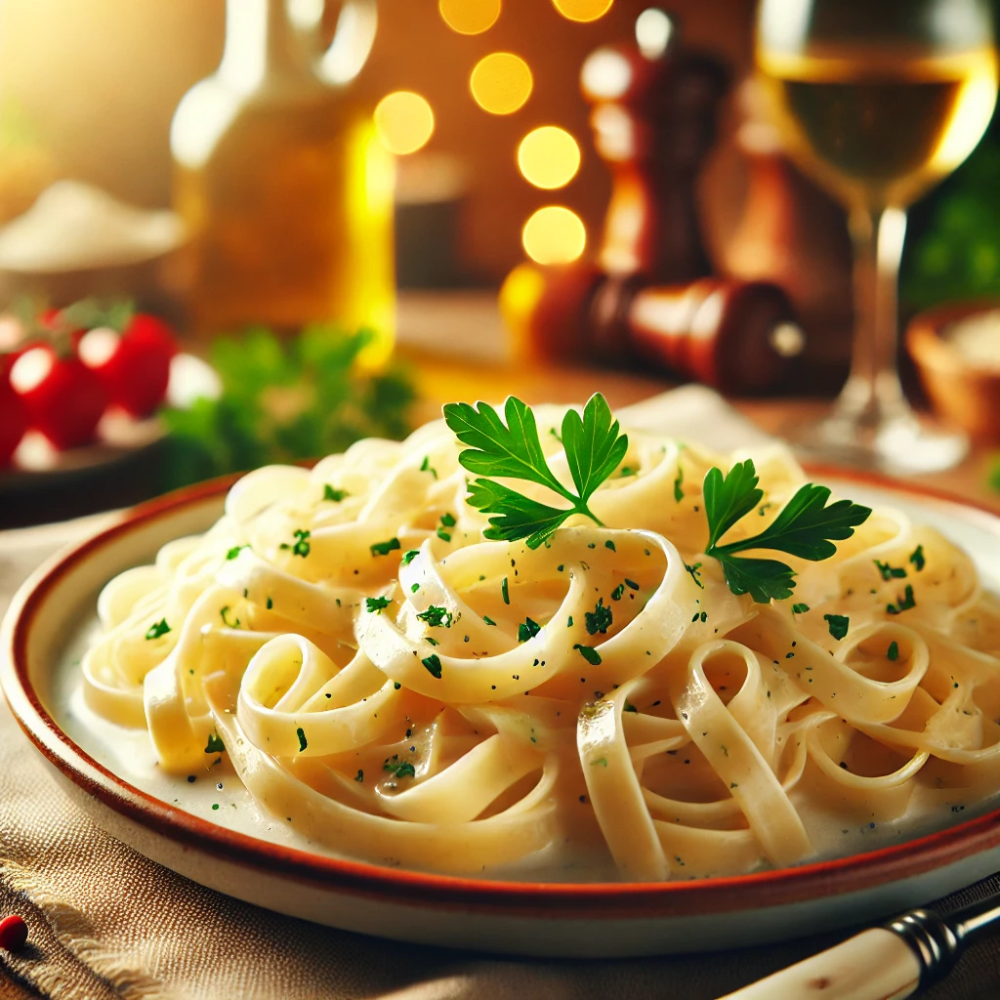
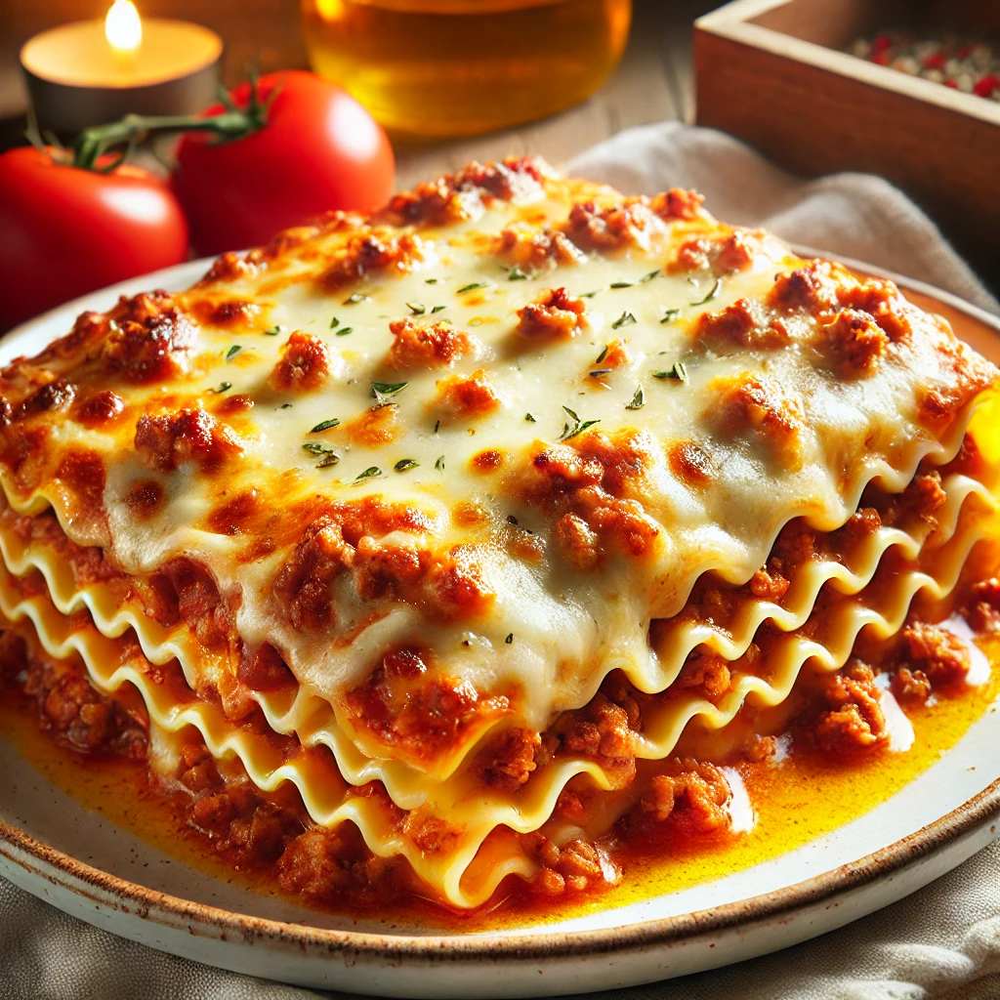

ESPAGUETE AO ALHO E OLHO

Ingredientes:
- 500g de espaguete
- 5 dentes de alho picados
- 4 colheres de sopa de azeite
- Sal a gosto
- Salsa picada para decorar
Modo de Preparo:
1. Cozinhe o espaguete em água salgada até ficar al dente.
2. Em uma frigideira, aqueça o azeite e doure o alho.
3. Adicione o espaguete e misture bem.
4. Finalize com salsa picada e sirva quente.
FETTUCCINE AO MOLHO ALFREDO
Ingredientes:
- 500g de fettuccine
- 2 colheres de sopa de manteiga
- 1 xícara de creme de leite
- 1/2 xícara de queijo parmesão ralado
- Sal e pimenta a gosto
Modo de Preparo:
1. Cozinhe o fettuccine em água salgada até ficar al dente.
2. Em uma panela, derreta a manteiga e acrescente o creme de leite.
3. Adicione o parmesão e misture até o molho engrossar.
4. Misture o fettuccine ao molho e sirva.
LASANHA Á BOLONHESA
Ingredientes:
- 500g de massa de lasanha
- 500g de carne moída
- 1 cebola picada
- 3 xícaras de molho de tomate
- 500g de queijo muçarela fatiado
- Sal e pimenta a gosto
Modo de Preparo:
1. Refogue a carne com cebola, sal e pimenta.
2. Acrescente o molho de tomate e deixe cozinhar.
3. Monte a lasanha com camadas de massa, carne e queijo.
4. Leve ao forno a 180°C por 30 minutos.